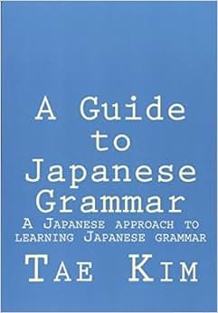

Grammar

The least thorough grammar you've ever seen
Learning grammar can be straightforward and complex at the same time. It's quite essential to learning Japanese and while it might seem daunting at first, there are resources out there that help make the learning process easier. The grammar learning process is relatively simple; just pick up the guide below and read it!
Grammar guide: Tae Kim's Grammar Guide
It is prime time to start getting some immersion going when you have learned some new grammar points. Seeing how the grammar you learned is applied in real usages really helps further your understanding of the grammar points.
There's not much more to say about grammar, just make sure you don't grind out grammar drills; you will slowly aquire it through immersion.
Speaking of immersion, that's our next step, and the meat of this whole process!